The Astrocalculator
The KStars Astrocalculator provides several modules that give you direct access to algorithms used by the program. The modules are organized by subject:
Coordinate Converters
- Angular Distance
- Apparent Coordinates
- Ecliptic Coordinates
- Equatorial/Galactic Coordinates
- Horizontal Coordinates
- Geodetic Coordinates
Solar System
Time Calculators
Angular Distance module
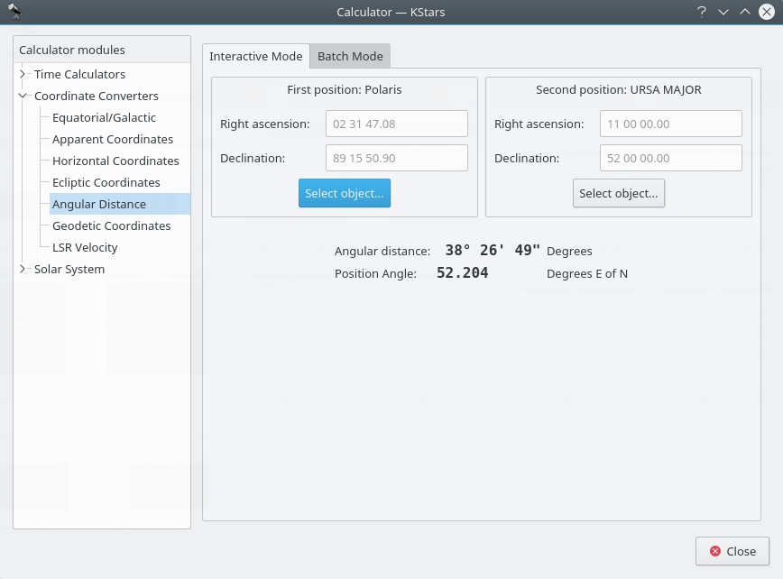
The Angular Distance tool is used to measure the angle between any two points on the sky. You simply specify the Equatorial coordinates of the desired pair of points, and then obtain the angle between the two points.
There is also a Batch mode for this module. In batch mode, you specify an input filename which contains a number of parameters (up to four) on each line: the initial right ascension (RA), initial declination (Dec), final right ascension and final declination. By default, each line should contain four numbers signifying the RA and Dec values for pairs of points. Alternatively, you can specify a single value for any of these four coordinates in the calculator panel (the corresponding values in the input file should be skipped if they are specified in the calculator).
Once you have specified the input filename and an output filename, simply press the Run button to generate the output file.
Apparent Coordinates module
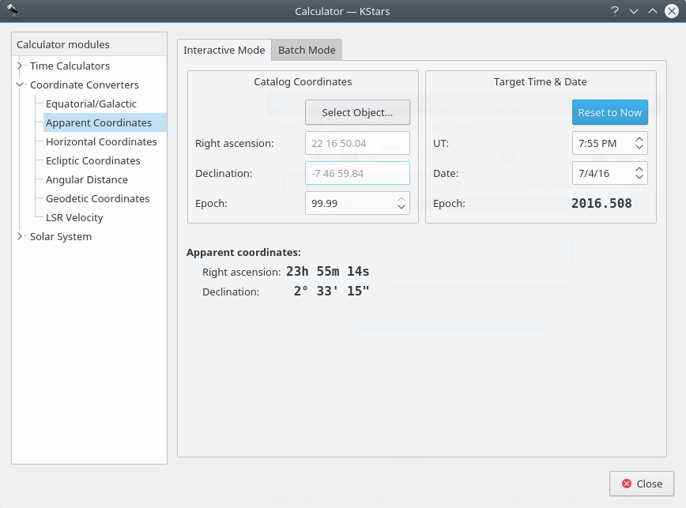
The Apparent Coordinates module converts the catalog coordinates of a point in the sky to its apparent coordinates for any date. The coordinates of objects in the sky are not fixed, because of precession, nutation and aberration. This module takes these effects into account.
To use the module, first enter the desired target date and time in the Target Time & Date section. Then, enter the catalog coordinates in the Catalog Coordinates section. Alternatively you can set the catalog coordinates by selecting an object using the Find Object dialog. You can also specify the catalog's epoch here (usually 2000.0 for modern object catalogs). Then the object's coordinates for the target date will be displayed in the Apparent Coordinates section.
Ecliptic Coordinates module
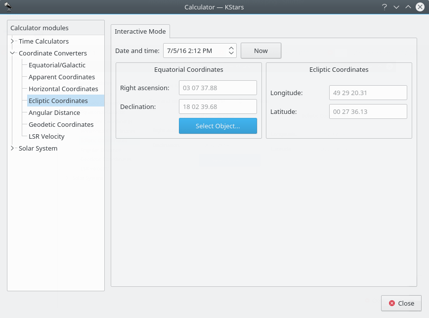
This module converts between Equatorial coordinates and Ecliptic coordinates. First, select Date & time. Then, fill in the coordinate values in either the Ecliptic Coordinates or Equatorial Coordinates section. Alternatively set the equatorial coordinates by selecting an object using the Find Object dialog. Then the complementary coordinates will be filled in.
Equatorial/Galactic Coordinates module
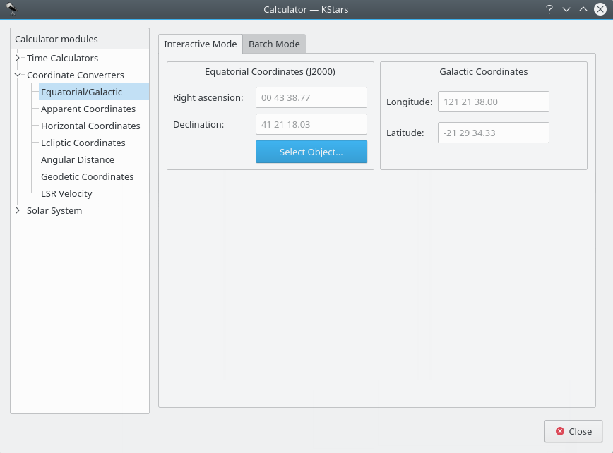
This module converts from Equatorial coordinates to Galactic coordinates, and vice versa. Fill in the coordinate values in either the Galactic coordinates or Equatorial coordinates section. Alternatively set the equatorial coordinates by selecting an object using the Find Object dialog. Then the complementary coordinates will be filled in.
The module contains a batch mode for converting several coordinate pairs at once. You must construct an input file in which each line contains two values: the input coordinate pairs (either Equatorial or Galactic). Then specify which coordinates you are using as input, and identify the input and output filenames. Finally, press the Run button to generate the output file, which will contain the converted coordinates (Equatorial or Galactic; the complement of what you chose as the input values).
Horizontal Coordinates module
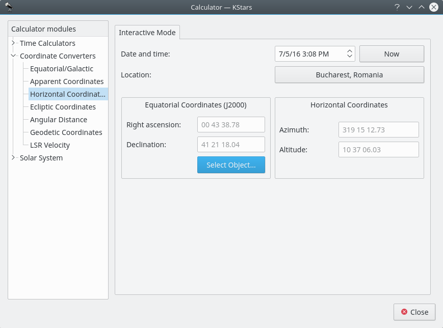
This module converts from Equatorial coordinates to Horizontal coordinates. First, select the date, time, and geographic coordinates for the calculation. Then, fill in the equatorial coordinates to be converted or use the Find Object dialog in the Equatorial Coordinates section. The corresponding Horizontal coordinates will be presented in the Horizontal Coordinates section.
Geodetic Coordinates module
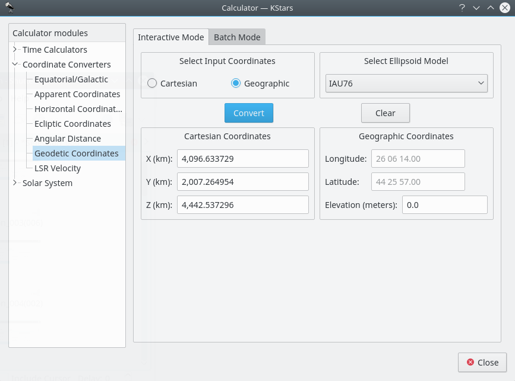
The normal geographic coordinate system assumes that the Earth is a perfect sphere. This is nearly true, so for most purposes geographic coordinates are fine. If very high precision is required, then we must take the true shape of the Earth into account. The Earth is an ellipsoid; the distance around the equator is about 0.3% longer than a Great Circle that passes through the poles. The Geodetic Coordinate system takes this ellipsoidal shape into account, and expresses the position on the Earth's surface in Cartesian coordinates (X, Y and Z) or in Geographic coordinates (Longitude, Latitude and Elevation).
To use the module, first select which coordinates you will use as input in the Select Input Coordinates section: “Cartesian” or “Geographic”. Then select an ellipsoid model and fill in the input coordinates in either the Cartesian Coordinates section or the Geographic Coordinates section. When you press the Convert button, the corresponding coordinates will be filled in.
The module contains a batch mode for converting several coordinate values at once. You must construct an input file in which each line contains up to three numbers: the input coordinate values (either Cartesian or Geographic). Then specify which coordinates you are using as input, and identify the input and output filenames. Finally, press the Run button to generate the output file, which will contain the converted coordinates (Cartesian or Geographic; the complement of what you chose as the input values).
Planet Coordinates module
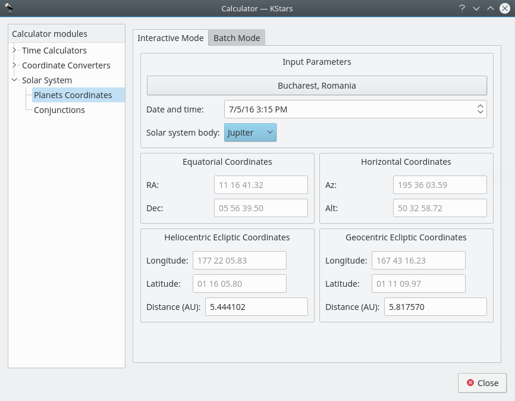
The Planet Coordinates module computes positional data for any major solar system body, for any time and date and any geographic location. Simply select the Solar system body from the drop-down list, and specify the desired date, time, and geographic coordinates (these values are preset to the current KStars settings). Then the Equatorial, Horizontal, and Ecliptic coordinates of the body are computed and displayed.
There is a batch mode for this module. You must construct an input file in which each line specifies values for the input parameters (solar system body, date, time, longitude, and latitude). You may choose to specify a constant value for some of the parameters in the calculator window (these parameters should be skipped in the input file). You may also specify which of the output parameters (Equatorial, Horizontal, Heliocentric ecliptic and Geocentric ecliptic coordinates) should be calculated. Finally, specify the input and output filenames, and press the Run button to generate the output file with the computed values.
Day Duration module
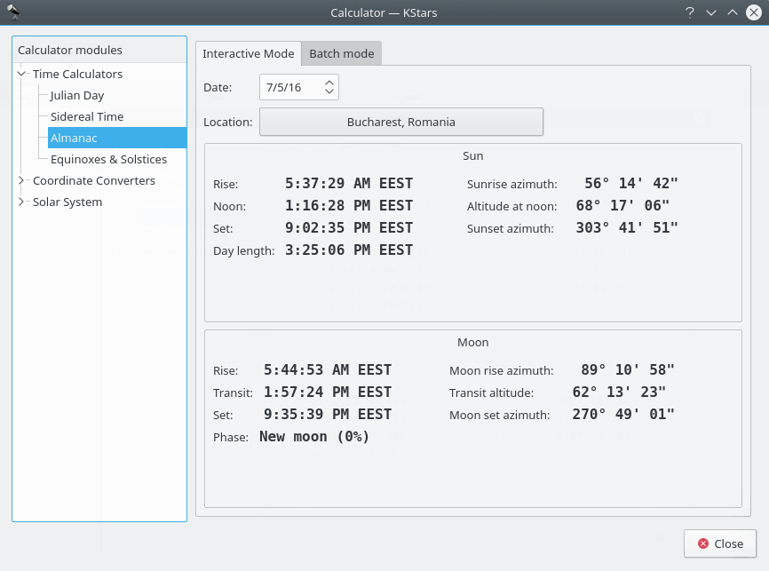
This module computes the length of day as well as sunrise, sun-transit (noon), and sunset times for any calendar date, for any location on Earth. First select the desired geographic coordinates and date, then the data is computed and displayed.
Equinoxes and Solstices module
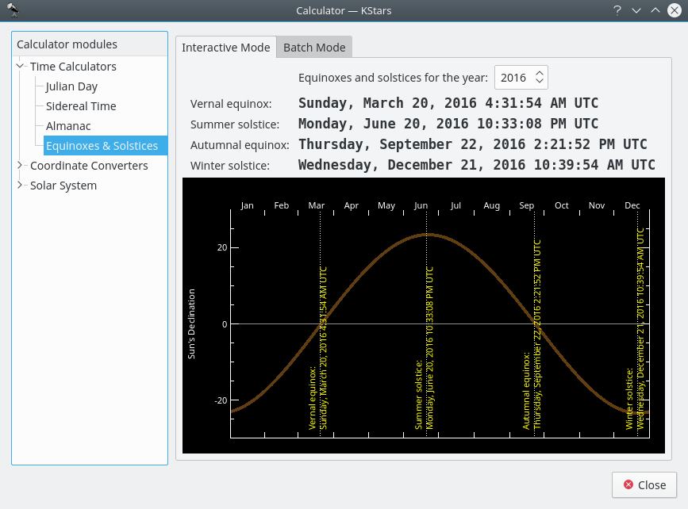
The Equinoxes and Solstices module calculates the date and time of an equinox or solstice for a given year. You specify the year and the date and time of the events (Vernal Equinox, Summer Solstice, Autumnal Equinox, or Winter Solstice) are displayed.
There is a batch mode for this module. To use it, simply generate an input file whose lines each contain a year for which the Equinox and Solstice data will be computed. Then specify the input and output filenames, and press the Compute button to generate the output file. Each line in the output file contains the input year and the date of each event. You can also read the output directly in KStars by pressing the View output button.
Julian Day module
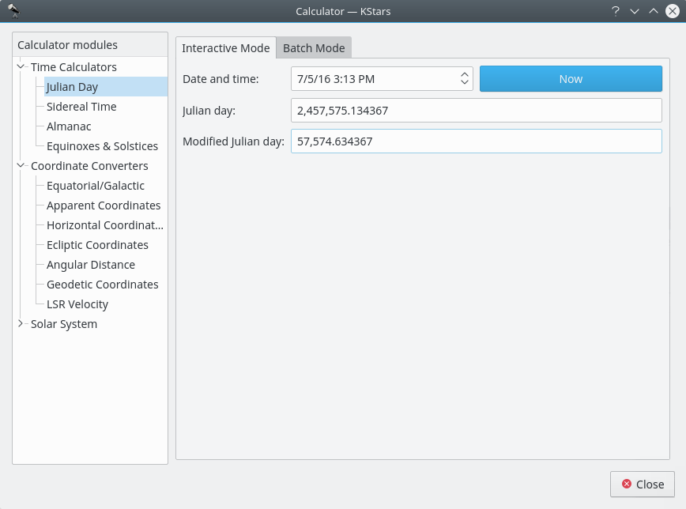
This module converts between the calendar Date and time, the Julian Day, and the Modified Julian Day. The Modified Julian Day is simply equal to the Julian Day - 2,400,000.5.
To use the module, enter one of the three dates and the corresponding values for the other two date systems will be displayed. You can also set the Date and time to now, by pressing the Now button.
There is a batch mode for this module. To use it, simply generate an input file whose lines each contain a number of values for the input parameter: “Date and time”, “Julian day” or “Modified Julian day”. Then specify the input and output filenames, and press the Compute button to generate the output file. The output file will contains values for the other two complementary parameters. For example, if your input file contains a set of “Date and time” values, then each line of the output file will contain values for “Julian day” and “Modified Julian day”. You can read the output directly in KStars by pressing the View output button.
Tip
Exercise:
What calendar date does MJD = 0.0 correspond to?
Sidereal Time module
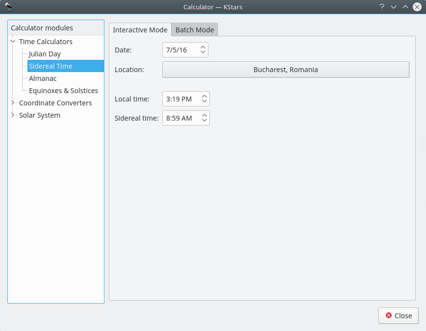
This module converts between Universal Time and Local Sidereal Time. First, select a geographic location and a date for the calculation. Then the corresponding value for the other Time will be displayed.
There is a batch mode for this module. To use it, simply generate an input file whose lines each contain values for the input parameter: “sidereal time” or “standard time”. You can choose to set the Date and Location in the current window, or you can tell KStars to read the Date and Location values from the input file. Then specify the input and output filenames, and press the Compute button to generate the output file. The output file will contains values for the complementary parameter. For example, if your input file contains a set of “standard time” values, then each line of the output file will contain values for “sidereal time”. You can read the output directly in KStars by pressing the View output button.